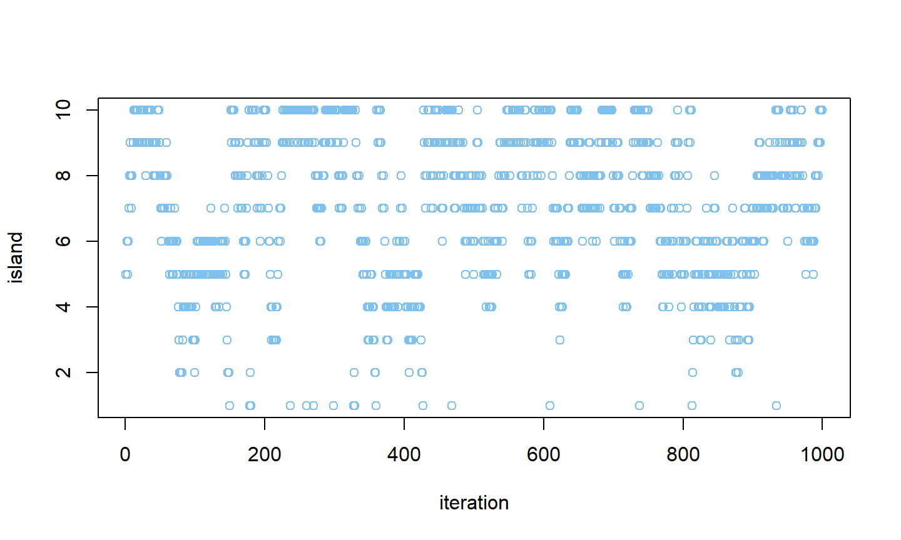
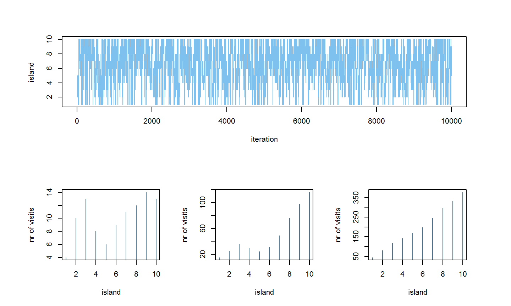
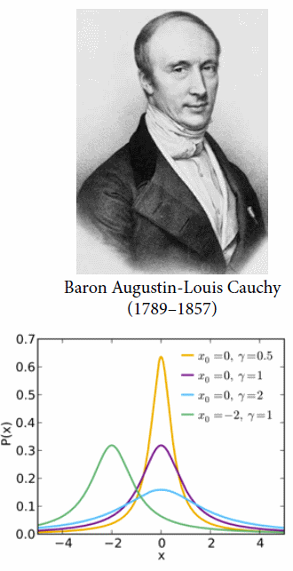

- visiting each island in proportion to its population size
The Metropolis Arcipelago
The Metropolis Arcipelago
- choose a starting point
The Metropolis Arcipelago
- flip a coin to choose island on left or right: the proposal island
The Metropolis Arcipelago
- Flip a coin to choose island on left or right: the proposal island
The Metropolis Arcipelago
- Find the population of the proposal island
The Metropolis Arcipelago
- Find the population of the current island
The Metropolis Arcipelago
- Move to proposal with probability \(p_8/p_9\)
The Metropolis Arcipelago
- Flip a coin to choose island on left or right: the proposal island
- Find the population of the proposal island
- Find the population of the current island
- Move to proposal with probability \(p_8/p_9\)
- Repeat from 1
This procedure ensures visiting each island in proportion to its population in the long run
Metropolis and MCMC
- Usual use is to draw samples from a posterior distribution
- Islands: parameter values
- Population size: proportional to posterior probability
- Works for any number of dimensions (parameters)
- Works for continuous as well as discrete parameters
R code
iterations <- 1000
positions <- rep(0, iterations)
for (i in 1:iterations){
# record current position
positions[i] <- current
# flip a coin to generate proposal
proposal <- current + sample(c(-1,1), size=1)
# make sure you are not outside the parameter region
if(proposal<1) proposal <- 10
if(proposal>10) proposal <- 1
# make decision about moving
prob.move <- proposal/current
current <- ifelse(runif(1) < prob.move, proposal, current)
}
Markov's chain of visits

Markov's chain of visits

The Metropolis Algorithm
- Metropolis algorithm requires symmetrical proposals
- Metropolis-Hastings (MH) does not
Metropolis-Hastings Sampling (Metropolis et al. 1953; Hastings 1970)
- Proposes new poin by changing all parameters randomly
- Computes accept probability of new point based on ratio of new to old log probability (and proposal density)
- Only requires evaluation of \(p(\theta\vert y)\)
- Requires good proposal mechanism to be effective
- Acceptance requires small changes in log probability
- But small step size lead to random walks and slow convergence and mixing
Metropolis and MCMC
- Metropolis: Simple version of Markov chain Monte Carlo (MCMC)
- Metropolis, Rosenbluth, Rosenbluth, Teller, and Teller (1953)
MANIAC
- Mathematical Analyzer, Numerical Integrator, and Computer
- MANIAC
- 450 kg
- 5 kilobytes of memory
- 70k multiplications/sec
- my laptop
- 1.2 kg
- 16 million kilobytes
- Billions of multiplications/sec
Metropolis and MCMC
- Metropolis: Simple version of Markov chain Monte Carlo (MCMC)
- Chain: Sequence of draws from distribution
- Markov chain: History doesn't matter, just where you are now
- Monte Carlo: Random simulation

Why MCMC
- Real value of MCMC seen when an integrated likelihood function cannot be written
- Many kinds of problems are like this:
- Many multilevel models
- Networks/phylogenies
- Some spatial models
Monte Carlo Methods (Metropolis and Ulam 1949)
- For integrals that are impossible to solve analytically
- but for which sampling and evaluation is tractable
- Compute plu-in estimates of statistics based on randomly generated variates
- e.g means, variances, quantiles/intervals, comparisons
- Accuracy with \(M\) independent samples proportional to \[
\frac{1}{\sqrt M}
\]
- 100 times more samples per decimal place
Monte Carlo Example
Posterior expectation of \(\theta\) \[ E[\theta\vert y] = \int \theta p(\theta\vert y)d\theta \]
Bayesian estimate minimizing expected square error \[ \hat\theta = \text{arg min}_{\theta^{'}} E[(\theta - \theta^{'})^2\vert y] = E[\theta\vert y] \]
Generate samples \(\theta^{(1)}, \theta^{(2)},\ldots ,\theta^{(M)}\) drawn from \(p(\theta\vert y)\)
Monte Carlo Estimator plugs in average for expectation: \[ E[\theta\vert y] \approx \frac{1}{M}\sum_{m=1}^M \theta^{(m)} \]
Monte Carlo Example II
- Bayesian alternative to frequentist hypothesis testing
- Use probability to summarize results
Bayesian comparison: probability \(\theta_1 > \theta_2\) given data \(y\): \[ \begin{eqnarray} P(\theta_1 > \theta_2\vert y) &=& \int \int I(\theta_1 > \theta_2)p(\theta_1\vert y)p(\theta_2\vert y)d\theta_1 d\theta_2\\ &\approx & \frac{1}{M}\sum_{m=1}^M I(\theta_1^{(m)} > \theta_2^{(m)}) \end{eqnarray} \]
Bayesian hierarchical model adjust for multiple comparisons
Markov Chain Monte Carlo
- When sampling independently fom \(p(\theta\vert y)\) impossible
- \(\theta^{(m)}\) drawn via a Markov chain \(p(\theta^{(m)} \vert y, \theta^{(m-1)})\)
- Require MCMC marginal \(p(\theta^{(m)}\vert y)\) equal to true posterior marginal
- Leads to auto-correlation in samples \(\theta^{(1)}, \theta^{(2)},\ldots ,\theta^{(M)}\)
- Effective sample size \(N_{eff}\) divides out autocorrelation (must be estimated)
- Estimation accuracy proportional to \(1/\sqrt{N_{eff}}\)
MCMC Strategies
- Metropolis: Granddaddy of all MCMC algorithms
- Metropolis-Hastings (MH): More general
- Gibbs sampling (GS): Efficient version of MH
- Hamiltonian Monte Carlo (HMC)
- All remain useful
- New methods being developed
Gibbs sampling
- Version of MH with very clever proposals
- requires choosing certain kinds of priors, conjugate
- Basis of BUGS, JAGS

Gibbs sampling
- Samples a parameter given data and other parameters
- Require conditional posterior \(p(\theta_n\vert y\theta_{-n})\)
- Conditional posterior easy in directed graphical model
- Requires general unidimensional sampler for non-conjugacy
- JAGS uses slice sampler
- BUGS uses adaptive rejection sampler
- Conditional sampling and general unidimensional sampler can both lead to slow convergence and mixing
Hamiltonian Monte Carlo
- Problem with Gibbs sampling (GS)
- Models with many parameters usually have lots of highly correlated parameters
- GS gets stuck, degenerates towards random walk
- At best, inefficient because re-explores regions
- Hamiltonian dynamics to the rescue
- it represents parameter state as particle in \(n\)-dimensional space
- flick it around frictionless log-posterior
- record positions
King Monty's Kingdom
King Monty's Kingdom
King Monty's Kingdom
King Monty's Kingdom

King Monty's Kingdom
King Monty's Kingdom
King Monty's Kingdom
King Monty's Kingdom
Hmiltonian Monte Carlo
- Population density curve: log-posterior
- Position of car: parameter vector
- Speed of car: momentum of parameter values
- Go fast when high
- Go slow when low
- Samples of position through time comprise samples from posterior distribution
Gibbs vs Hamiltonian MCMC
Gibbs vs Hamiltonian MCMC
Stan
Stan is NUTS
- No U-Turn Sampler (NUTS): Adaptive Hamiltonian Monte Carlo
- Implemented in Stan (rstan: mc-stan.org)
Stan is NUTS
Stan is NUTS
HMC Estimates
library(rstanarm) post2 <- stan_lmer(oed ~ period + treatment + oedbase+ (1|patient), data=data) posterior_interval(post2, prob=0.95)
| 2.5% | 97.5% | |
|---|---|---|
| (Intercept) | -3.03 | 2.77 |
| period | -0.48 | 0.00 |
| treatment | -0.55 | -0.06 |
| oedbase | 0.93 | 1.04 |
| sigma | 0.63 | 0.89 |
- \(\sigma \sim \text{dcauchy}\)
HMC Estimates
One of many things named after Augustin-Louis Cauchy (KO-shee)
- Ratio of two Gaussian samples
- Useful distribution with thick tails
- Parameters: location of mode, scale
- Mean and variance undefined
- Related to Lévy flights

HMC estimates
- If it happens during wamup (adaptation), it is normal
- If it happens a lot after warmup, start worrying
Check the chains
- First and most important check: trace plot
plot(post2, "trace", regex_pars = 'treatment')
Warmup
- Warmup is adaptation to posterior for efficient sampling
- Samples during wamup NOT from posterior
- Automatically discarded by precis/summary and other functions
- Warmup is not burn in
- burn in is front part of Markov chain using Gibbs or Metropolis
How to not get chained
Convergence diagnostics
summary(post2)
| mcse | Rhat | n_eff | |
|---|---|---|---|
| Treatment | 0.0 | 1.0 | 4000 |
| oedbase | 0.0 | 1.0 | 588 |
How many samples?
- Use warmup and iter to control number of samples
- First run to get relaxed
- \(warmup = 1000\) and \(iter = 2000\)
- Advices
- Enough warmup so mixing good, sampling efficient
- Enough sampling for our purpose (n_eff)
- Means: 200 usually enough
- 99th percentile: 20-thousan or more
- Poorly mixing chains always require more samples
How many chains?
- Use chains to control number of chains
- First run: one chain to get relaxed
- Tune: multiple chains, to check convergence/stationary
- Final run: one chains is fine, more is processors to spare
- Good heuristic:
- 1 short
- 4 medium
- 2 long
Getting the slides
- The slides for this course were created with Rmarkdown: http://rmarkdown.rstudio.com/.
- They are available from https://github.com/berkeley3/BDA.
To re-compile the slides:
- Download the directory containing the lectures from Github
- In R open the .Rmd file and set the working directory to the lecture directory
- Click the KnitHTML button on Rstudio or run the following commands:
library(rmarkdown)
render("main.Rmd")